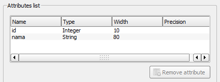
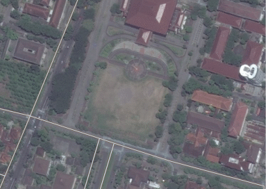
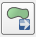
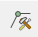
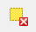
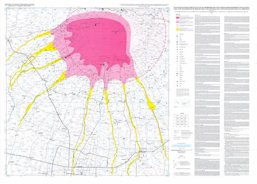
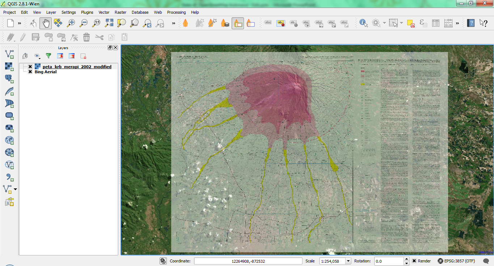

Module 9: Creating Vector Layers¶
Learning Objectives
Add a raster layer for digitising
Create new vector features (polygons, lines and points)
Digitise new vectors by tracing a raster layer, considering topology
Georeference an image
Creating a map using data that already exists is only the beginning. We have already learned how to edit and add features to OpenStreetMap using JOSM. In this module, we will discuss how to edit existing vector layers in QGIS, and how to create an entirely new dataset.
1. The layer creation dialog¶
Before you can add new vector data, you need a vector dataset (a layer) to add it to. In our case, we’ll begin by creating a new data layer, and then we’ll add features to it. First, we must define our dataset.
Create a new project in QGIS by clicking on the New Project icon.
Go to . You’ll be presented with the following dialog:
At this point we must decide what kind of dataset we want to create. Remember that a data layer can only contain features of points, lines or polygons - never a mix. When we create the layer, we must define what type of data it will contain.
Since polygons are made up of points and lines, let’s jump into polygons. Once you’ve mastered this, creating a point or a line layer should be easy!
Check the box next to Polygon.
We’ll specify the Coordinate Reference System (CRS) in the next box. By default the box will contain the CRS of the project, which for us will be WGS84. This is a widely used and very useful CRS, so let’s stick with it!
When we create our new layer, the attribute table will only have one column by default - id. This attribute contains a unique id number for every feature. We can add additional fields to the attribute table now, when we create the layer. Let’s add a name field.
Type nama into the box next to Name. The settings should match those shown here:
Click the Add to attributes list button.
Your attributes list should now look like this.
Click OK. A save dialog will appear.
Navigate to a directory of your choosing.
Save the new layer as gedung_kampus.shp.
The new layer should appear in your Layers panel.
2. Data sources¶
When you create new data, it should represent objects that really exist on the ground. We have already learned of numerous ways to collect data using OSM tools. We learned about GPS to record locations, Field Papers and of course, aerial imagery. These are all tools that we can use to identify real-life locations and record them in a digital data layer.
In QGIS, we can use the same types of sources to get information about the ground. In this example, we will once again turn to aerial imagery, but instead of using Bing, we will use a raster image provided in the tutorial directory.
Click on the Add Raster Layer button:
Navigate to
/qgis/Sleman/.Select the file
UGM.tif.Click Open. An image will load into your map.
Find the new entry in the Layers panel.
Drag it to the bottom of the list so that it is below the vector layer you created in the previous section.
Go to and enable ‘on the fly’ transformation.
Make sure that “WGS 84” is selected as the CRS, and click OK.
Right-click on the UGM layer and click Zoom to Layer.
Zoom in to the centre of the raster image. We will be digitising three areas:
3. Digitising¶
Digitising, as you might have guessed, is the art (or science) of creating digital vector data from another source, such as a raster image. In order to begin digitising, we must first enter edit mode. GIS software commonly requires a separate mode for editing, to prevent users from accidentally editing or deleting important data. Edit mode is switched on or off individually for each layer.
Let’s enter edit mode for the gedung_kampus layer:
Select gedung_kampus in the Layers panel.
Click on the Toggle Editing button:

If you can’t find this button, ensure that the Digitising toolbar is enabled. There should be a check mark next to the menu entry.
Once you are in edit mode, the digitising tools will become active:
From left to right on the image above, they are:
Toggle Editing: activates / deactivates edit mode.
Save Layer Edits: saves changes made to the layer.
Add Feature: start digitising a new feature.
Move Feature(s): move an entire feature around.
Node Tool: move only one part of a feature.
Delete Selected: delete the selected feature (only active if a feature is selected).
Cut Features: cut the selected feature (only active if a feature is selected).
Copy Features: copy the selected feature (only active if a feature is selected).
Paste Features: paste a cut or copied feature back into the map (only active if a feature has been cut or copied).
We want to add a new feature.
Click on the Add Feature button to start digitising:
You’ll notice that your mouse cursor becomes a crosshair. This allows you to more accurately place the points you’ll be digitising. Remember that even as you’re using the digitising tool, you can zoom in and out on your map by rolling the mouse wheel, and you can pan around by holding down the mouse wheel and dragging around in the map.
The first feature you’ll digitise is a field (called “GSP Field”):
Start by clicking on a point somewhere along the edge of the field.
Place more points by clicking further along the edge, until the shape you’re drawing completely covers the field. This is very similar to drawing a polygon in JOSM.
To place the last point, right-click where you want it to be. This will finalise the feature and bring up the Attributes dialog.
Fill in the values as shown here:
Click OK. You’ve created a new feature!
If you make a mistake while digitising a feature, you can always edit it later. Simply finish digitising the feature and then follow these steps:
Select the feature with the Select Feature tool:
Then use one of these tools to edit the feature:
|  | Move feature(s) tools |
Move the entire feature(s) |
|  | Node tools |
move only one point where you may have misclicked |
|  | Delete selected |
get rid of the feature entirely so you can try again |
Go to Edit ‣ Undo or press Ctrl+Z on keyboard |
Undo mistakes |
Now try it on your own:
Digitise the school itself and the upper field. Use this image to assist you:
Remember that each new feature needs to have a unique id value!
When you are finished adding features to a layer, you must save the changes to that layer.
Click on the Toggle Editing button.
You will be asked to save your edits. Click Save.
Now you know how to create polygon features! Creating points and line layers is just as easy - you simply need to define the type of layer when you create it, and of course you can only create points in point layers and lines in line layers.
4. Georeferencing¶
In the previous section we digitised a raster image, thus creating vector data. This is essentially the same process as when we use Bing imagery in JOSM to add to OSM. In both of these cases, the imagery that we use is already georeferenced - that is, it is correctly placed in its proper location.
When an image is georeferenced, it is stretched in different ways so that each pixel in the image corresponds as closely as possible to the area it represents on the spherical Earth. Because it is difficult to perfectly align a flat image on a round object, there are often small georeferencing errors, as we learned previously with imagery offset.
What if you have a map that is not georeferenced? What if you have a paper map given to you by a government agency? How can you digitise it?
The first step is to turn your paper map into a digital image that you can manipulate with your computer. You can do this with a scanner (or possibly a digital camera), although doing so is beyond the scope of this module.
4.1 Georeferencing an image¶
Now we will learn how to georeference an image in QGIS so that is correctly located on Earth. We will be using a map provided in the tutorial files, which looks like this:
Start a new QGIS project. Save your previous work if you like.
Go to .
Click the Open raster button.
Find the file
peta_krb_merapi_2002.jpg, which is located in the theqgis/Sleman/Merapi/folder. Click Open.Select WGS 84 when prompted and click OK.
In order to georeference this image, we need to associate points on the image, to known points on the Earth. Such points are called ground control points (GCPs). Luckily, this map image has latitude and longitude coordinates written on it at every corner. So, to georeference this image, we will create four GCPs, one at each corner of the map, and we will turn our jpeg file into a geotiff, a georeferenced image.
Zoom in to the upper left corner of the map.
Click the Add point button.
Click on the very top left point of the map, right where the top border of the map meets the left border.
A box will pop up requesting the x and y coordinates of the point you just clicked. The coordinates are written in blue on the map. The longitude (x coordinate) is 110° 15’ 00” E and the latitude (y coordinate) is 7° 29’ 47” S. We can enter the coordinates in the box as follows. Remember that south and west coordinates will be negative numbers.
Click OK.
You will see a red point appear showing the location of your control point, and an entry in the table at the bottom.
Repeat this process, creating ground control points at each of the four corners of the map. Remember to enter the longitude and latitude that is written at each corner. When you are finished, you should have four GCPs and your table will look like this:
Lastly we will adjust the settings and then create our output file.
Click on the Transformation settings button.
Next to Transformation type select Linear.
Provide a filename for the output raster. The file type will be
.tif.Check the box next to Load in QGIS when done. It should look like this:
Click OK and look at the table.
Make sure the residual value is near zero to improve accuracy.
Now we are ready to produce the georeferenced image file. Click on the Start georeferencing button.
If you are asked to select the layer’s coordinate system, choose WGS 84.
Go to and make sure that on the fly transformation is enabled.
The output file will be created and automatically added to your project. If you hover over the image, you should see coordinates at the bottom of QGIS, which are close to the coordinates you entered when placing the GCPs.
Another way to see that the image is correctly placed, is by adding a layer with the OpenLayers plugin. Here we have added Bing satellite imagery, and made our new geotiff transparent to see Merapi in the background.
Knowing how to georeference is important when you want to digitise from a paper map or an image that is not already georeferenced. Once you have georeferenced an image like this, you can apply the same digitisation techniques that we learned previously in this module to create vector shapefiles that can be used in QGIS and InaSAFE.